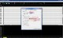
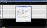
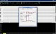

8 / 17

setting-1.jpg
91.40 KB
1024 x 616 像素
JPEG 檔案交換格式
setting-1_l.jpg
257.95 KB
1280 x 770 像素
JPEG 檔案交換格式

setting-2.jpg
87.25 KB
1024 x 616 像素
JPEG 檔案交換格式

setting-2_l.jpg
283.63 KB
1280 x 770 像素
JPEG 檔案交換格式